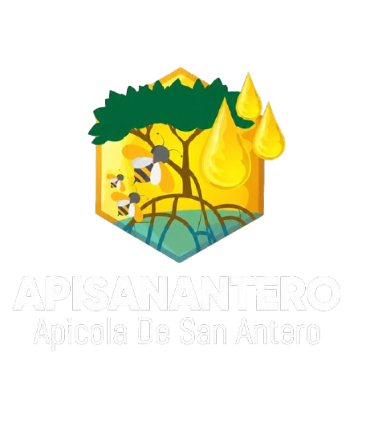
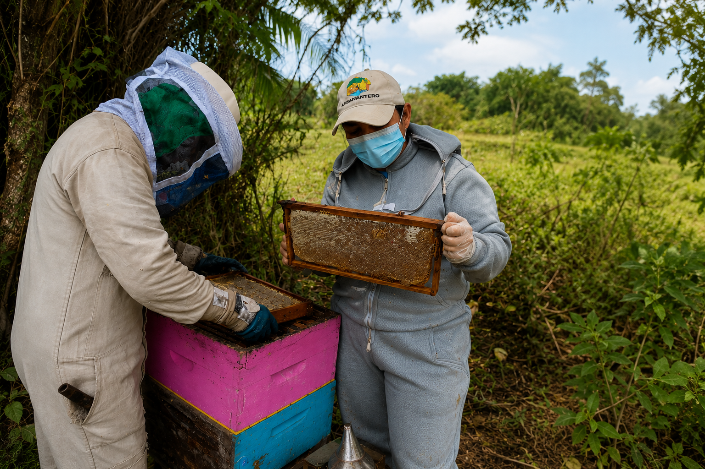
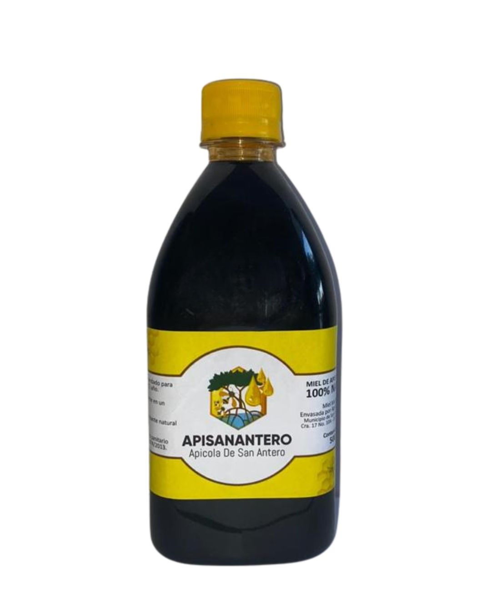
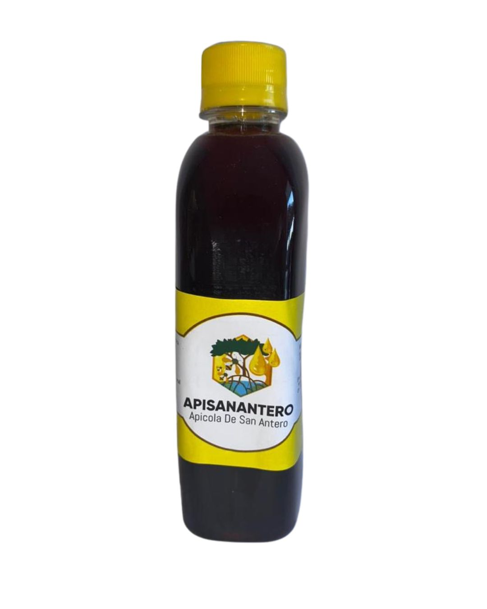
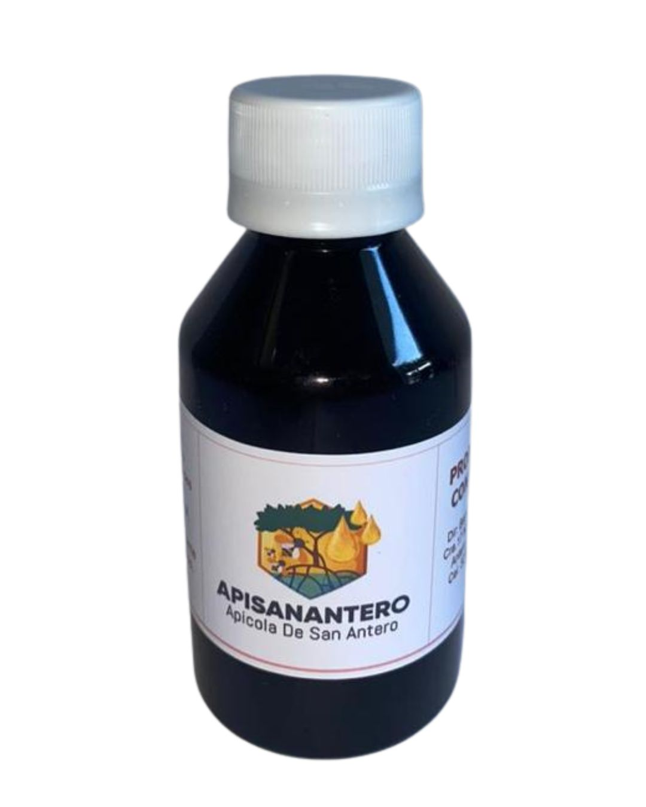
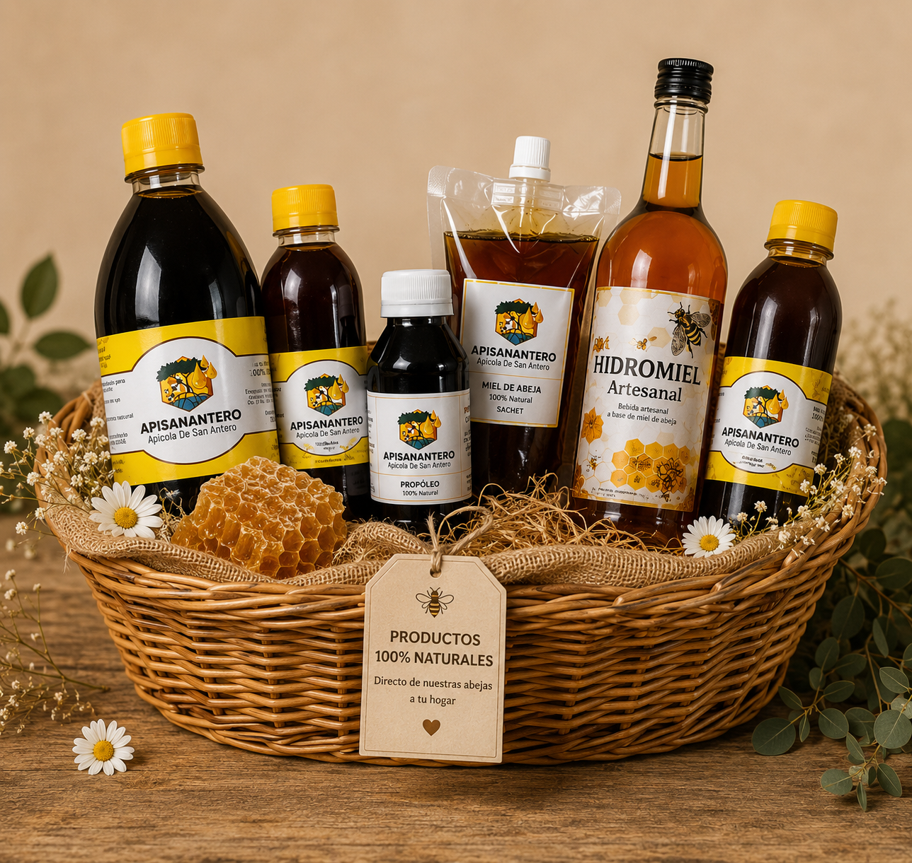
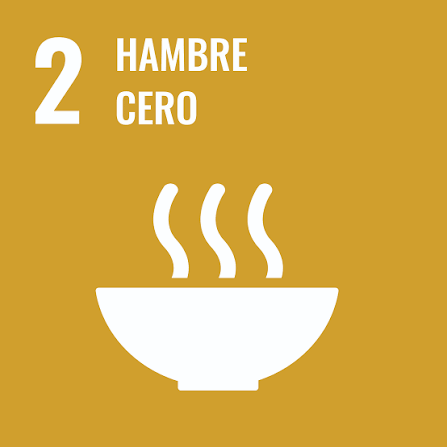
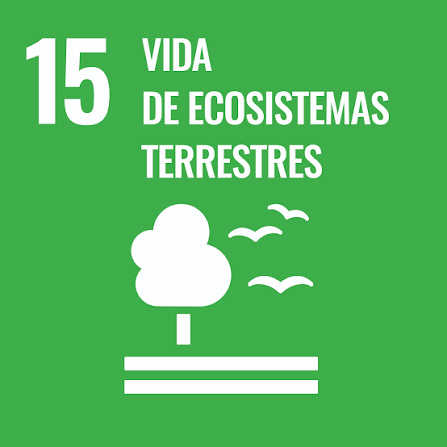
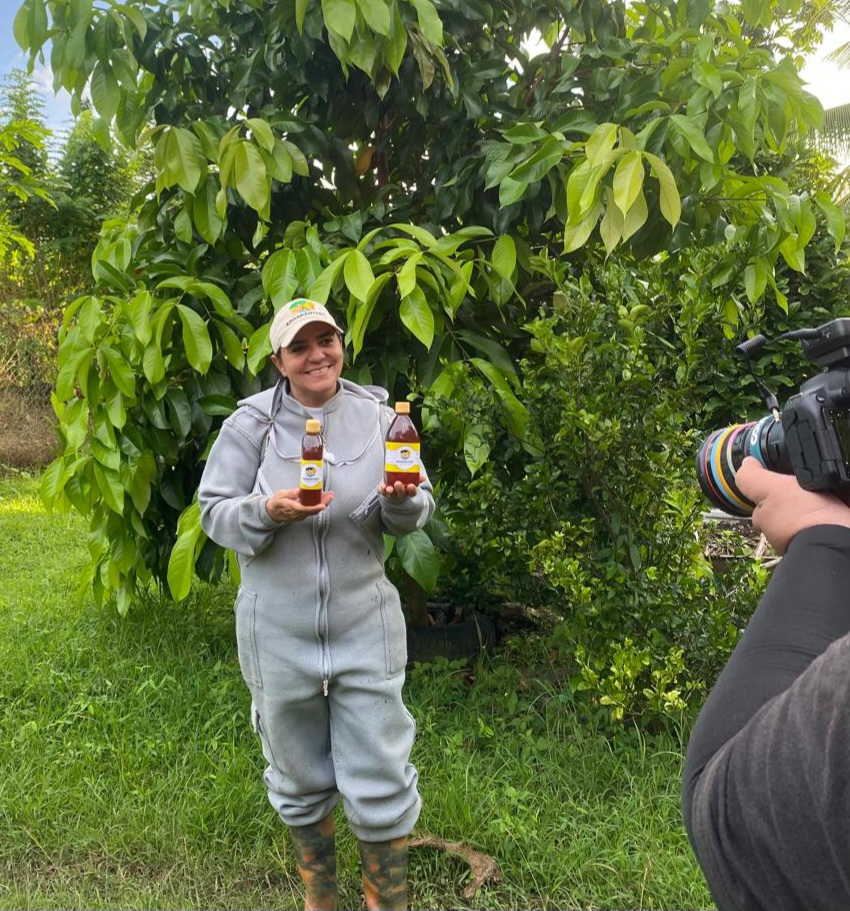
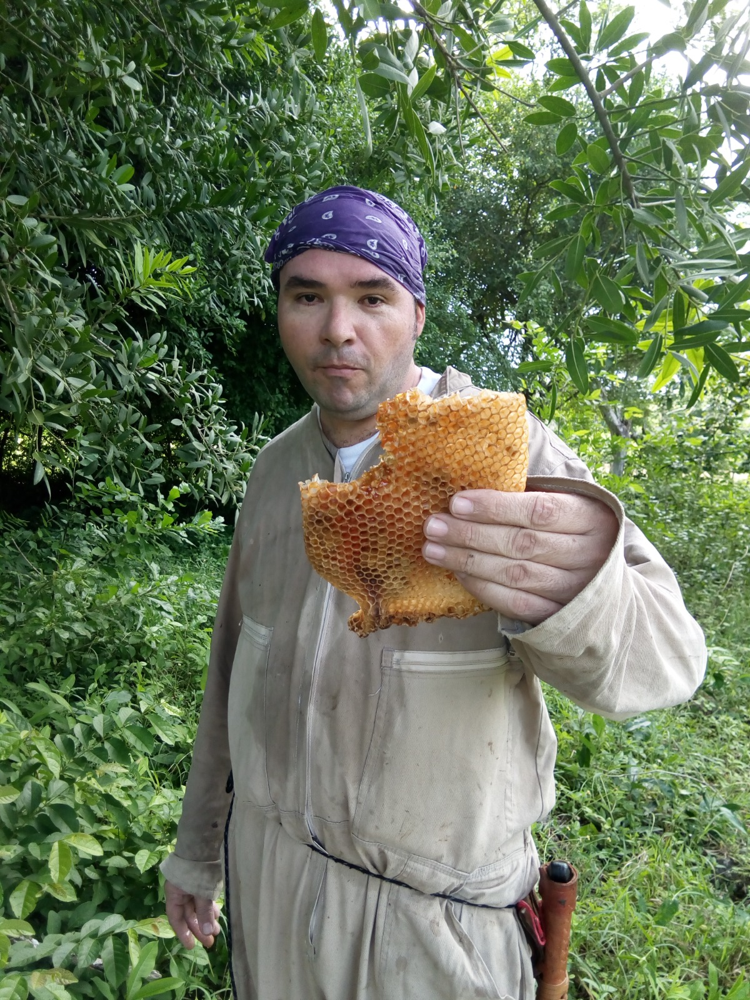

Miel 100% Natural
Calidad que
se siente
Directamente desde San Antero, Córdoba.
Producimos miel pura y productos apícolas
con amor por las abejas y la naturaleza.

Apícola de San Antero
Miel 100% Natural
Directamente desde San Antero, Córdoba.
Producimos miel pura y productos apícolas
con amor por las abejas y la naturaleza.

APISANANTERO es una asociación apícola ubicada en San Antero, Córdoba, dedicada a la producción, transformación y comercialización de miel 100% natural y otros productos apícolas, elaborados con altos estándares de calidad y compromiso con el medio ambiente.
Trabajamos para fortalecer la apicultura sostenible, apoyar el desarrollo económico y social de nuestros asociados, y ofrecer productos naturales que transmitan salud, bienestar y confianza a nuestros clientes.
Miel pura y productos apícolas elaborados con calidad, tradición y amor por las abejas.

Miel 100% natural, ideal para el hogar, negocios y consumo familiar.
Pedir ahora
Presentación práctica para llevar, regalar o disfrutar todos los días.
Pedir ahora
Producto natural de la colmena, reconocido por sus propiedades tradicionales.
Pedir ahora
Elige varios productos y arma tu pedido personalizado.
Pedir combinaciónEn APISANANTERO promovemos una apicultura sostenible que protege la biodiversidad, fortalece la economía rural y ofrece miel 100% natural. Nuestro trabajo contribuye al bienestar de las familias apicultoras y está alineado con los Objetivos de Desarrollo Sostenible.

Promovemos empleo digno y crecimiento económico para nuestras comunidades.

Contribuimos a la seguridad alimentaria mediante la apicultura.

Protegemos la biodiversidad y los ecosistemas.

Trabajamos junto a comunidades e instituciones.
Conoce nuestros logros y avances.
Familias beneficiadas
Miel Natural
Producción Responsable
Desarrollo Rural
Detrás de APISANANTERO hay un equipo comprometido con la apicultura sostenible, la calidad de nuestros productos y el bienestar de nuestras comunidades.

Lidera la visión y estrategia de APISANANTERO. Su compromiso con las abejas, el desarrollo rural y la apicultura sostenible impulsa el crecimiento de la empresa.

Encargado de la producción, el manejo apícola y las operaciones diarias. Su experiencia asegura la calidad de nuestra miel y el cuidado de las colmenas.
Producimos miel 100% natural en San Antero, Córdoba, y realizamos envíos seguros a cualquier ciudad del país.
Nuestra planta de producción se encuentra ubicada en San Antero, donde elaboramos miel y productos apícolas de excelente calidad.